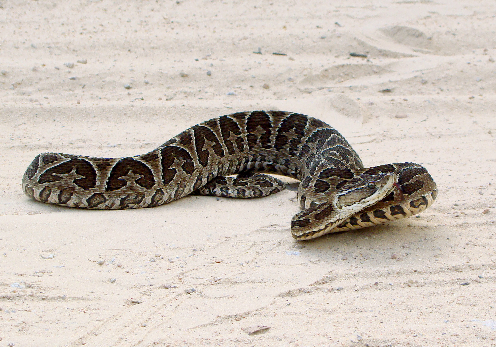

Urutu
Nome científico: (Bothrops alternatus Duméril, 1854)
Nome comum: Urutu, cruzeira.
Classificação biológica:
Domínio: Eukaryota.
Reino: Animalia.
Filo: Chordata.
Classe: Reptilia.
Ordem: Squamata.
Família: Viperidae.
Gênero: Bothrops.
Espécie: Bothrops alternatus.
Nutrição: Carnívoro.
Hábitos alimentares: Alimenta-se de pequenos mamíferos, anfíbios, aves e répteis.
Morfologia do corpo: Corpo robusto com coloração marrom e desenhos em formato de "cruz" ao longo do corpo. Pode atingir até 1,5 metro de comprimento.
Comportamento: É uma serpente terrestre e de hábito noturno. Quando ameaçada, assume postura defensiva e pode ser agressiva.
Principais Presas: Pequenos mamíferos, anfíbios, aves e répteis.
Principais Predadores: Seriemas, gaviões e alguns mamíferos carnívoros.
Locais habitados
Distribuição: Ocorre no Brasil, Argentina, Paraguai e Uruguai.

Habitat: Habita áreas abertas, campos, cerrados e bordas de florestas.
Reprodução: Vivípara, dando à luz de 10 a 20 filhotes por ninhada.